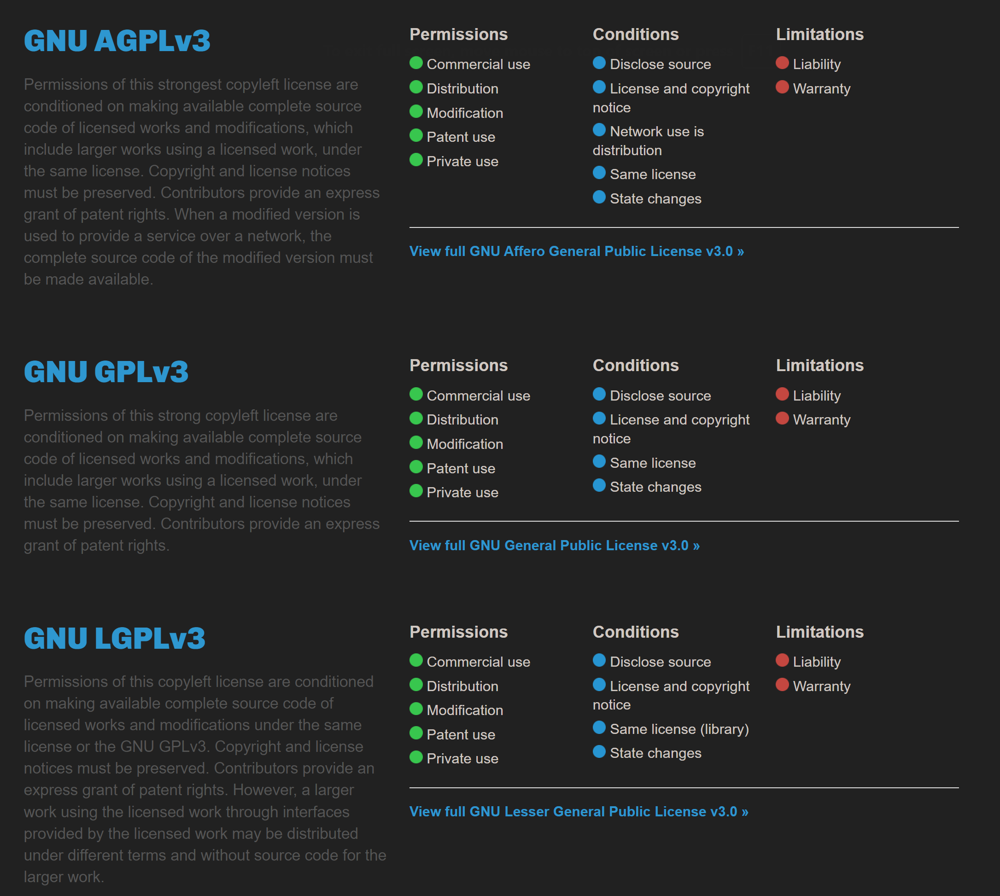
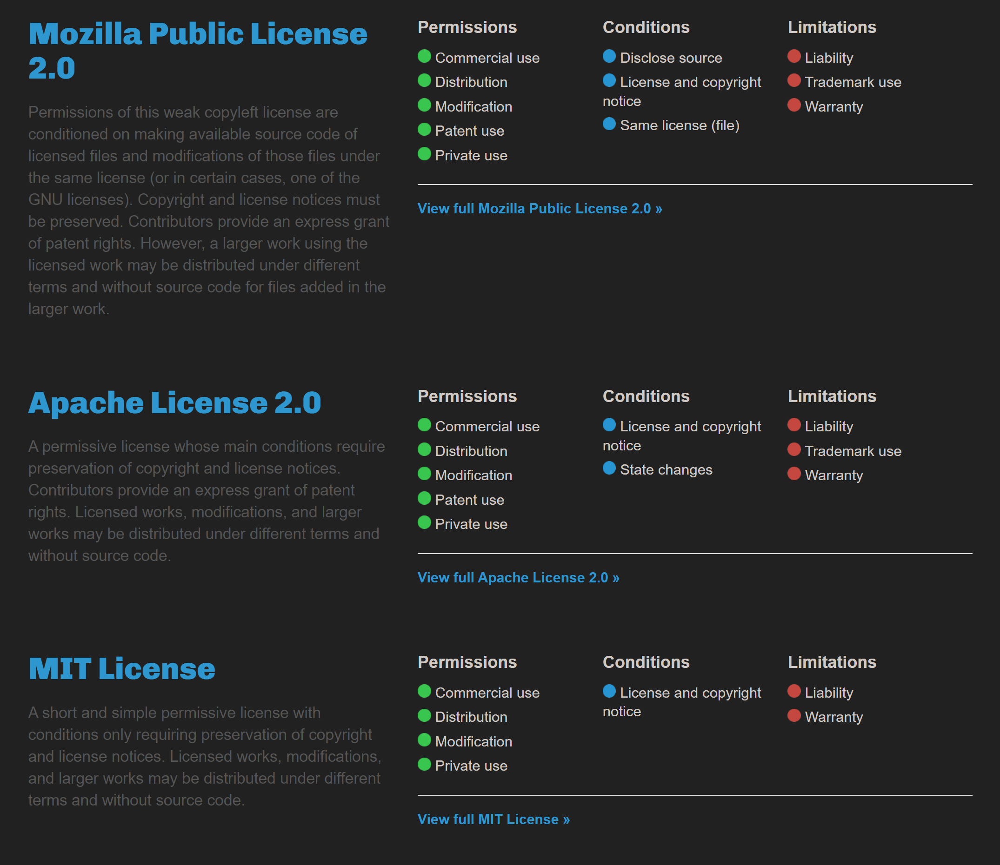
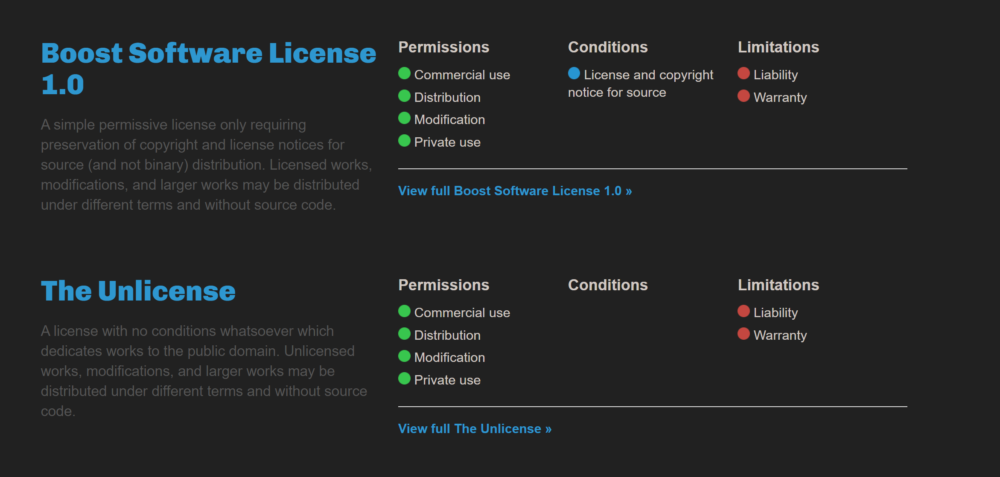

1. Version Control System (VCS)
VCS are mostly used for when you are handling a big project and you want to save different versions of it to revert to them each time you face an error or you want to compare it to another version
As a start to web development you should neither choose your pathway on how you want to make a website, 2 common pathways that most people are into it is Coding a website or using a CMS
As a start to coding a website you need to learn HTML and CSS to create a static website which doesn’t have any real functionality and you can just adjust the design of it after that you will learn JavaScript to handle different actions and events happening in your website.
After you completely learned the above skills, you know the basics of web development and you start to learn a Back-End language to handle different URLs and data in your website (example: login and signup functionality, making a database), in 2023 most of people use Next.js framework for their Back-End environment because its easy to learn and it’s on the JavaScript which means you don’t need to learn another coding language.
Other popular Back-End frameworks are Flask and Django. Both are on python language which is an easy to learn Coding Language and have a huge community to help you out on your work
Mostly peoples who don’t want to spend a lot of time on making a website use a CMS to quickly create their favourite website behind a template, WordPress is one of the most popular CMS that most people still use it but after 2020 a lot of people use different CMS especially if they are making an e-commerce (business) website because WordPress was getting a bit old and it’s on PHP language mainly which is a really slow compared to other languages, some of the most used CMS these days are Shopify, Wix and Magento
VCS are mostly used for when you are handling a big project and you want to save different versions of it to revert to them each time you face an error or you want to compare it to another version
A large community of developers which they can upload their open source project and showcase their abilities and skills with GitHub features
A website similar to reddit for developers to explain their bugs and random peoples respond to them to fix it
Visual Studio Code is a high extensible code editor redefined and optimized for building and debugging modern web and cloud applications.
a cloud-based artificial intelligence tool developed by GitHub and OpenAI to assist users development environments by autocompleting code.
a tool to make html components using drawing and widgets without any coding
a subsidiary of Amazon that provides on-demand cloud computing platforms and APIs to individuals, companies, and governments, on a metered, pay-as-you-go basis. Often times, clients will use this in combination with autoscaling.
Next.js is an open-source web development framework created by the private company Vercel providing React-based web applications with server-side rendering and static website generation.
a free and open-source high-level programming language developed and maintained by Microsoft. It is a strict syntactical superset of JavaScript and adds optional static typing to the language. It is designed for the development of large applications and transpiles to JavaScript.
a software company that provides cloud-based web development services. It allows users to create HTML5 websites and mobile sites using online drag and drop tools.
To protect your website you can include your copyright marks in your footer which most of the web developers do these days as an example on my own periodic table website down in the footer I have my copyright marks.
theptable.comIf you are maintaining an open-source project which others can use your codes you can license your project under a license to let others know which part of the code they can use and which part they can’t use, the table below is a list of most used licences in GitHub
The MIT License is short and to the point. It lets people do almost anything they want with your project, like making and distributing closed source versions.
Babel, .NET, and Rails use the MIT License.
The GNU GPLv3 also lets people do almost anything they want with your project, except distributing closed source versions.
  